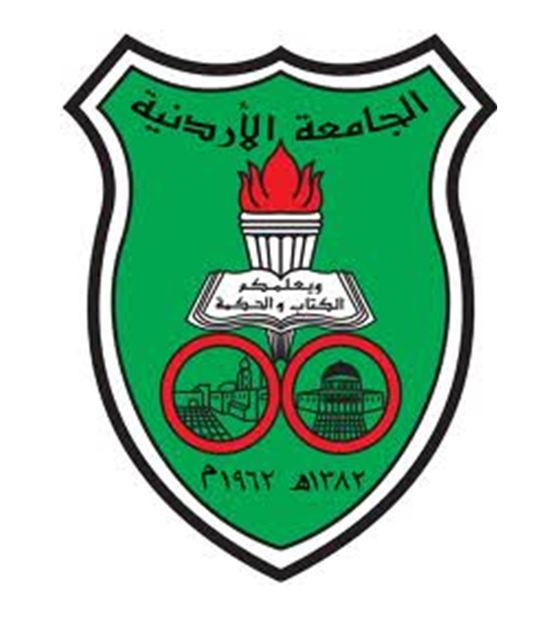

المساعد الذكي لبرنامج الدبلوم العالي لإعداد المعلمين
الجامعة الأردنية – فرع العقبة
كلية اللغات | بنك الأسئلة والأجوبة الشامل

مرحباً بك في المساعد الذكي لبرنامج الدبلوم العالي
أدخل كلمتك المفتاحية في مربع البحث أعلاه لاستعراض الأجوبة والتفاصيل مباشرة من قاعدة المعرفة الشاملة.